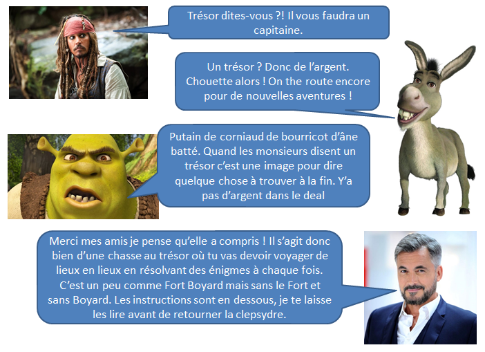
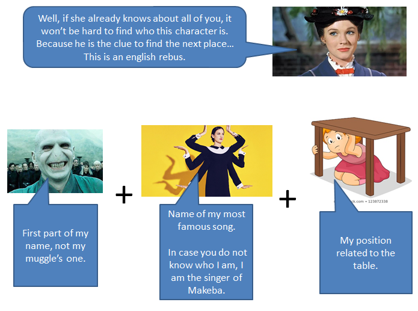
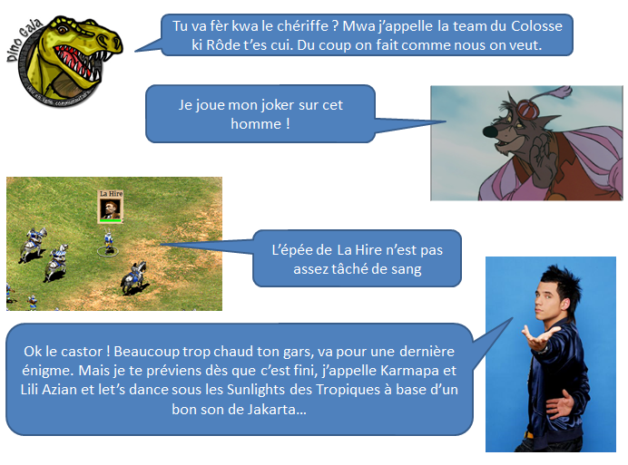

Ordre de mission
Bonjour Clara,
Avoir 22 ans c'est un cap dans une vie.
Mais mérites-tu vraiment cet âge aussi banal soit-il ?
Ton passé et ton présent se sont réunis, Dinogaïa a parlé au Shérif de Nottingham.
Lui même en a touché un mot à Jey-Jey qui s'est vu obligé d'en informer Marry Poppins.
Enfin bref, ce conseil réuni a décidé de te faire passer une épreuve afin que tu puisses prouver que tu es réellement plus mature qu'il y a 5 ans.
Mais quelle est cette épreuve te poses-tu comme question ?
Dinogaïa voulait une quête digne de Moloke, le Shérif de Nottingham voulait une utilisation de ton passé,
Marry Poppins voulait utiliser tes pouvoirs magiques et Jey-Jey tes connaissances en bonnes musiques des années 2000 à nos jours.
Ils se sont finalement mis d'accord sur ce qui sera ta mission : Une Chasse Aux Trésor !
Voici comment cela va se dérouler...
12 lieux seront à découvrir, sur chacun des 11 premiers lieux tu trouveras une énigme à résoudre.
Dès que tu auras la réponse, il faudra te rendre à nouveau sur cette application et entrer la réponse dans la zone de texte appropriée.
Si la réponse est la bonne, un nouvel indice te sera donné pour trouver le lieu suivant.
Les réponses sont soit des nombres entiers, soit un mot. Pas de phrase ni de mots composés ne sont attendus.
Si la réponse est un mot, il faut l'écrire en caractères minuscules.
Le 12ème lieu ne contient pas d'énigme mais "une surprise" qui achevera ta quête.
Avant de partir pour cette chasse au trésor il faudra t'équiper des choses suivantes :
- Ton cerveau, c'est ton meilleur ami pour cette épreuve
- Ton téléphone portable mais seules les applications appel, sms et Google Maps sont autorisées
- La calculatrice est interdite, tous les calculs se font de tête, éventuellement sur papier
- Mets le son de cet ordi sur 60%
- Le doudou de ton choix dans la valise à doudous (il te protégera si besoin)

Dès que tu est prête, appuie sur la clepsydre. L'indice du premier lieu devrait apparaître.
May the force be with you !
Avancement de la chasse : 1/12
Et c'est partiiiiiiiiiiiiiiii pour le SHOOOOOOOOOOOWW !!!
Tu peux mettre le player en pause pour mieux te concentrer.
Voici donc ton premier indice, trouve le lieu qu'il indique et vas-y.
Une fois sur place, cherche un morceau de papier.
Il contient une énigme.
Résous-la et marque la réponse dans la zone de texte plus bas...
A une chance sur 4 je joue de la musique...
Avancement de la chasse : 2/12
Bien joué la Clara du 1 au 9, le changement de sens, le saute ton tour et le plus 2.
Sans oublier que chaque carte est présente 2 fois, sinon nos histoires de saute-mouton ne serviraient à rien.
Allez, nouveau lieu, nouvel indice...
On m'éteint, je pue.
A vider en période de confinement...
Avancement de la chasse : 3/12
Et oui bien joué la Clara ! On se voit la réponse en image...
Trêve de plaisanterie...
Olivier Minne veut tester tes capacités à trouver le mot code.
Trouve donc ce mode code, il te ménera au prochain lieu...
TRESOR
VOITURE
Avancement de la chasse : 4/12
Je pense que tu as bien prouvé à ce cher Olivier tes compétences en mot code.
Voici l'énigme du Père Fouras pour le prochain lieu...
Par 3 elles me piquent
Contrairement aux croyances mon coeur n'est pas le plus cher...
Avancement de la chasse : 5/12
On ne remerciera jamais aussez Gauss pour cette formule de la somme des nombres de 1 à n qui vaut n(n+1)/2.
Pour chaque nombre il y a 2 moceaux équivalent au simple, 1 au double et un au triple. Ce qui fait qu'on a chaque nombre 7 fois
Ainsi, on a bien : (20*21/2)*7 = 1470
Sans oublier le centre rouge et bleu qui valent 75 en tout, cela nous donne 1545.
Nous allons attaquer les indices de lieux et des énigmes un peu plus corsés.
Voici le suivant...
4°22'00.0''E
Avancement de la chasse : 6/12
On a hésité avec Give me all your luvin' et Hollywood mais c'est bien avec cette chanson MODERNE que tu nous as tant fait JAZZé.
MDRRR ta kompri ? hahhaha.
Tu peux mettre le player en pause à présent.
Il semblerait que pour la prochaine épreuve Marry Poppins veuille tester des capacités en anglais...

Avancement de la chasse : 7/12
Et oui, la planète suivante était bien Saturne...
Pour le nouveau lieu à trouver, c'est cette personne qui a voulu te poser une question.
Voici donc la question d'Alain.
Avancement de la chasse : 8/12
Tu peux mettre le player en pause à présent.
Mais faire de l'anglais et de l'espagnol ne plaît pas à tout le monde.
Voici donc la chanson à trouver...
Arrived by mistake
Postman clumsiness
Avancement de la chasse : 9/12
Ronpschit Ernest Tigrette Topla Bijou Hamiral et Chapo !
C'est très bien joué !
Regardons la réponse en images...
Mais j'entends le Père Fouras arriver... Une autre énigme à te poser il a...
Après le grill, il va au moulin.
Il fait parfois bien du chemin pour être blanchi le matin.
Avancement de la chasse : 10/12
Suite géométrique de premier terme U0 = 3 et de raison 5.
96 était donc bien la bonne réponse !
Et c'est donc un livre que tu vas devoir chercher.
Mais lequel te demandes-tu ? Cette maison en possède tellement.
L'indice suivant pourra peut-être t'éclairer....
Mais ne va pas bien plus vite
Avancement de la chasse : 11/12
Ouuuuui ! Marry Poppins est très fière de toi.
On sent que l'entrainement à l'épellothon a bien servi ! #cranium
On se voit la réponse en musique...
On passe à l'avant dernière épreuve.
C'est sans conteste la plus dure...
Certains sont morts sans avoir eu le temps de la résoudre...
Il s'agit d'une charade.
La réponse à celle-ci te donnera un indice sur le prochain lieu...
Mon deuxième n'est ni SFR ni Free
Mon troisième c'est "ici" dit par les gens du WATI B
Mon quatrième nous pollue l'air
Mon tout est une personnalité française
Qui suis-je ?
Avancement de la chasse : 12/12
Bien joué la Clara !
Pas grand chose de plus à ajouter, comme le disait Alain Matonne, tous les ingéridents étaient là pour réussir.
Nous voilà donc au dernier palier de cette chasse au trésor, le temps est passé tellement vite...

Regarde attentivement cette vidéo...
Un animal a été mentionné dans cette vidéo.
Rends-toi à présent dans la partie de la maison qui contenant le plus de cet animal entre 2007 et 2015...
C'est là que réside la surprise...